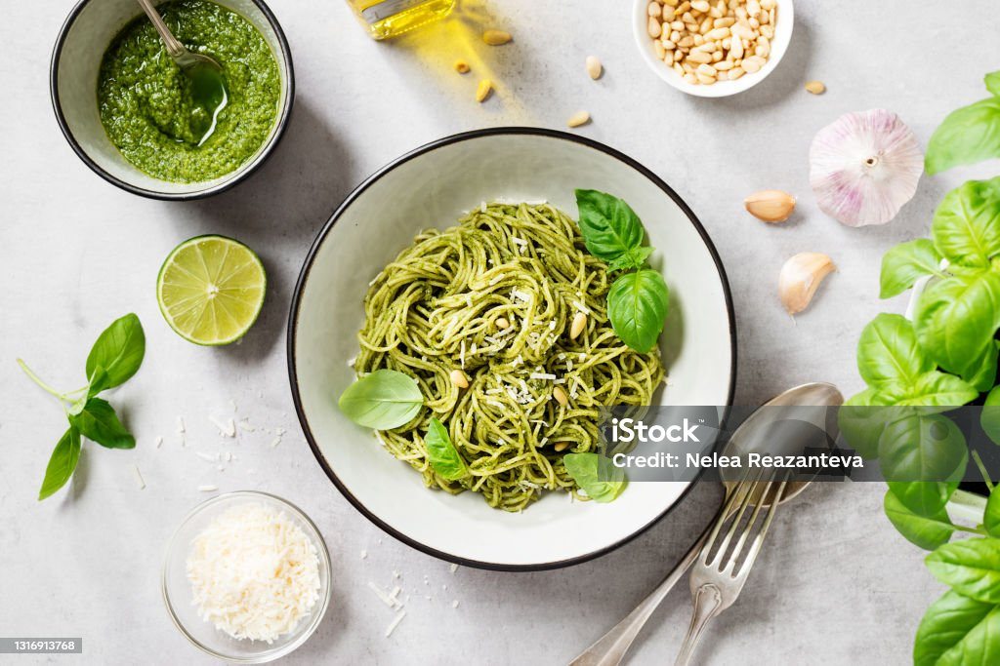

Basil pasta recipe

Decription
Basil pasta is a meditteranean dish which is simple and very tasty.
This dish is appreciated because of the easiness of its recipe and the short list of
ingredients.
Ingredients
- A box of your favorite pasta
- 50 leaves of fresh basil
- Olive oil
- A bit of garlic
- Grated emmental or parmiggiano (according to your preferences)
Steps
- Boil water in a saucepan to cook your pasta
- In a mixer, put all your ingredients (besides the pasta of course) and mix it
- Put less or more of any ingredients according to your preferences
- Once the pasta is cooked, mix it directly with your mixture
- Wait a few minutes to let the mixture melt with the pasta
Home